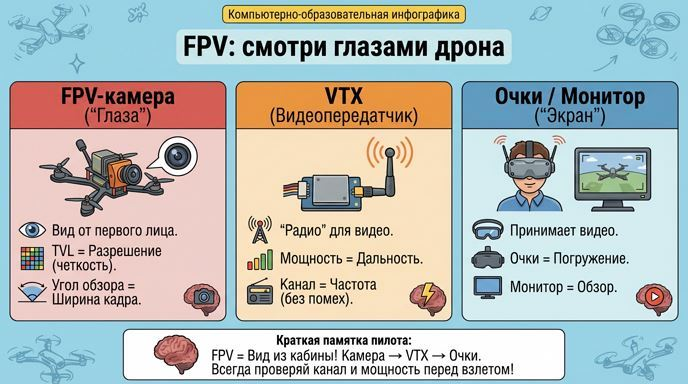
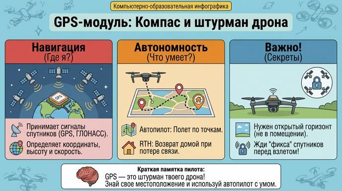
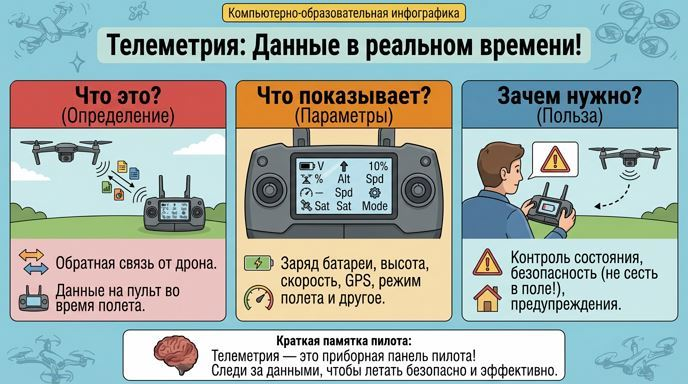
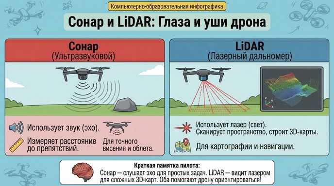

Вспомогательное оборудование: глаза, уши и суперспособности дрона
Привет, юный пилот! Мы уже собрали основу дрона — раму, моторы, контроллер и батарею. Но чтобы он стал настоящим супергероем, нужны "гаджеты": камеры для зрения, датчики для чувств, GPS для навигации. Сегодня разберёмся с вспомогательным оборудованием — от FPV для вида от первого лица до LiDAR для 3D-сканирования. Это превратит твоего дрона из простой машины в умного помощника для съёмки, поисков или картографии. Готов? Добавляем суперсилы!
FPV-система: смотри глазами дрона
FPV (First Person View) — это как VR для пилота: ты видишь мир с высоты птичьего полёта в реальном времени.
✔ FPV-камера: "Глаза" дрона. Передаёт видео на твои очки или монитор. Параметры: Разрешение (TVL для аналоговых — выше лучше), угол обзора (широкий для гонок, узкий для дальних съёмок), светочувствительность (Lux — для полётов в темноте). Типы: Аналоговые (лёгкие, быстрая передача, но шумное видео) и цифровые (HD-качество, но тяжелее и с задержкой).
✔ VTX (Video Transmitter): "Радио" для видео. Передаёт сигнал от камеры. Параметры: Мощность (25 мВт для ближних полётов — безопасно и легально; 200-800 мВт для дальних, но нужна лицензия, чтобы не мешать другим!). Частоты (5.8 ГГц), каналы (выбирай свободный, чтобы без помех). Антенны: Круговая поляризация для стабильности, всегда согласуй с очками!

Навигация и данные: знай, где ты и что вокруг
GPS-модуль: "Компас" дрона. Определяет координаты, высоту, скорость по спутникам (GPS, ГЛОНАСС). Применение: Автономные полёты по точкам, удержание позиции (PosHold), возврат домой (RTH). Параметры: Точность (метры), количество спутников (больше — лучше сигнал).


Датчики:
✔ Сонар (ультразвуковой): Измеряет расстояние до объектов звуком. Для точного висения на низкой высоте или облёта препятствий.
✔ LiDAR (лазерный дальномер): Сканирует пространство лазером, строит 3D-карты. Для картографии, археологии, автономной навигации — видит рельеф даже в темноте!

Краткая памятка от бывалого пилота:
✔ FPV: Камера для видео + VTX для передачи — не включай VTX без антенны!✔ GPS: Для навигации и автономии, точность от спутников.
✔ Телеметрия: Данные о дроне на пульт — следи за зарядом!
✔ Датчики: Сонар для расстояний звуком, лидар лазером для 3D.
✔ Золотое правило: Соблюдай законы по мощности VTX и выбирай оборудование под миссию — безопасность и точность на первом месте!
Удачи на занятиях! Теперь твой дрон готов к настоящим приключениям. Лети умно и с видом!
Навигация по образовательному курсу
Урок 1. Мир дронов: история, виды и правила безопасности
Урок 2. Рама. Варианты исполнения.
Урок 3. Моторы, электродвигатели.
Урок 4. Пропеллеры.
Урок 5. Регулятор оборотов.
Урок 6. Контроллер полета (автопилот).
Урок 7. Приемник-передатчик (ПДУ).
Урок 8. Аккумуляторная батарея (АКБ). Виды и маркировка.
Урок 9. Вспомогательное оборудование.
Тестирование по курсу
Для перехода к следующему учебному материалу используйте кнопку «Вперед» в верхней навигации.